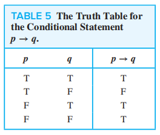
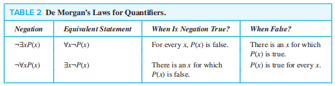
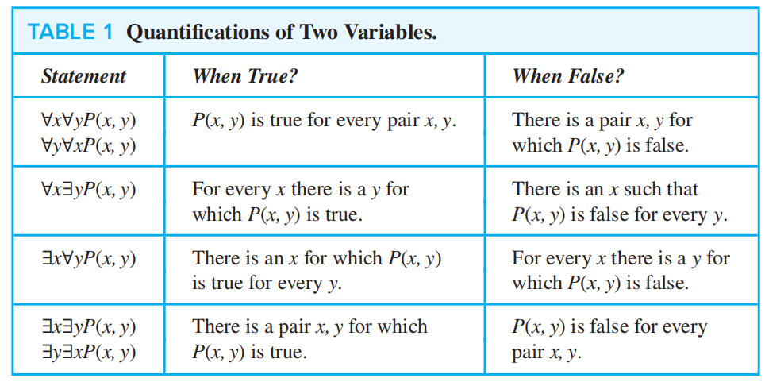

Chapter 1 The Foundations: Logic and Proofs
1.1 Propositional Logic
Propositions
命题(proposition)：一个陈述句 ，要么真要么假，但不同时为真为假 命题变量(proposition variables) 一般用字母（e.g. \(p, q, r, s \dots\)）表示
分类： + 原子命题(atomic proposition) 不能被表示成更简单的形式的命题 + 复合命题(compound proposition) 由一些命题通过 逻辑运算符(logic operators) 连接而成的命题
Truth Tables
可以用来判断是否为命题等值(equivalent propositions)(后面会讲到)
注： 1. 如果有\(n\)个命题变量，那么真值表就会有\(2^n\)行 2. 如果有\(n\)个命题变量，那么就可以构造出\(2^{2^n}\)个不同的命题(需要用到[[Chap 6 Counting|计数]]的知识)
Logic Operator
假设\(p, q\)为两个不同的命题
-
否定(negation)：\(\neg p\) (读作not p)
-
合取(conjunction)：\(p \land q\) (读作p and q)
注：有时候but也表示 \(\land\)
-
析取(disjunction)：\(p \lor q\) (读作p or q)
-
异或(exclusive or, XOR)：\(p \oplus q\) (读作p XOR q)
注： 1. either…or… 表示XOR 2. or有时也表示XOR，具体结合语境看，所以or有两种含义： + inclusive or : \(\lor\) + exclusive or : \(\oplus\)
Conditional Statements
- 条件语句(conditional statements, or implication)：\(p \rightarrow q\) (读作 if p, then q) 
注： 1. \(p\)称为前提(hypothesis), \(q\)称为结论(conclusion) 2. 条件语句的多种表述：
❗重点记住这两个，很容易混淆： ==\(p\) only if \(q\)==， ==\(q\) unless \(\neg p\)== 3. 从真值表可以看出，前提和结论之间不必有任何关联，\(p \rightarrow q\)只取决于\(p\)和\(q\)的真值 4. *Implication Law: \(p \rightarrow q \equiv \neg p \lor q\) (1.3节会讲到的)
命题的转化： + 逆命题(Converse)：\(q \rightarrow p\) + 逆否命题(Contrapositive)：\(\neg q \rightarrow \neg p\) + 否命题(Inverse)：\(\neg p \rightarrow \neg q\)
注：逆否命题与原命题等价(Equivalent) (见1.3节)
- 双条件句(Bioconditional, or Bi-implication)：\(p \leftrightarrow q\) (读作 p if and only if q)

注： 1. 双条件句的多种表达： + \(p\) is necessary and sufficient for \(q\) + if \(p\) then \(q\), and conversely + \(p\) iff \(q\) (iff = if and only if) + \(p\) exactly when \(q\) 2. \(p \leftrightarrow q \equiv (p \rightarrow q) \land (q \rightarrow p)\) 3. 双条件句的含蓄表述：可能使用if, then 或 only if 来表示 if and only if 4. 在[[Chap 2 Combinational Logic Circuit#^a7ec1f|dld]]中，这种形式也被称为同或(XNOR)
Precedence

Logic and Bit Operations
位(Bit)：一种表示两种可能值的记号，即0和1。计算机用位表示信息，位也能用来表示真值
布尔变量(Boolean variable)：值为true或false的变量
上面所有表格中的“T”可用“1”代替，“F”可用“0”代替
位串(Bit strings)：由0个或多个位构成的序列，它的长度即位的个数 ^755cc0
按位运算(Bitwise operations)
+ 按位或(bitwise OR)
+ 按位与(bitwise AND)
+ 按位异或(bitwise XOR)

Supplements(from Exercises)
模糊逻辑(Fuzzy Logic)：一个命题的真值是\([0,1]\)间的数。真值为0的命题被认为是false，真值为1则被认为为true，0-1之间的数表明不同的真实程度。常用于人工智能中。
1.2 Application of Propositional Logic
Translating English Sentences
方法: 找原子命题，找逻辑运算符，然后组合起来
System Specifications
上一部分 + 一致(consistent) 的概念：存在一组命题变量的可能赋值(真值)，对于一组命题中的每一条命题均成立。 ^3acd57
~~Boolean Search~~
一些搜索引擎的高级搜索会用到这种方式，这里就不作叙述
Logic Puzzles
看看课本例题
~~Logic Circuits~~
见[[Chap 2 Combinational Logic Circuit|dld第2章]]
1.3 Propositional Equivalences
Logical Equivalence
- 永真(Tautology)：真值总是为真的命题
- 永假(Contradiction)：真值总是为假的命题
- Contingency：既非永真亦非永假的命题
逻辑等值(Logically equivalent)：两个复合命题在不同的赋值情况下的真值时钟相等，即\(p \leftrightarrow q\)为永真，记作\(p \equiv q\)
🌟重要逻辑等值表  ^cacfc2
^cacfc2

一些补充： + conditional-disjunction equivalence：\(p \rightarrow q \equiv \neg p \lor q\) + Exportation law：\((p \land q) \rightarrow r \equiv p \rightarrow (q \rightarrow r)\) + Absurdity law：\((p \rightarrow q) \land (p \rightarrow \neg q) \equiv \neg p\)
Using De Morgan's Laws
🌟德·摩根定律(De Morgan's Laws) + \(\neg (p \land q) \equiv \neg p \lor \neg q\) + \(\neg(p \lor q) \equiv \neg p \land \neg q\)
拓展版： + \(\neg(\bigvee ^ n _{j = 1}p_j) \equiv \bigwedge ^ n _{j = 1} \neg p_j\)
即\(\neg(p_1 \lor p_2 \lor \dots \lor p_n) \equiv (\neg p_1 \land \neg p_2 \land \dots \land \neg p_n)\)
- \(\neg (\bigwedge ^ n _{j = 1}p_j) \equiv \bigvee ^ n _{j = 1} \neg p_j\)
即\(\neg (p_1 \land p_2 \land \dots \land p_n) \equiv (\neg p_1 \lor \neg p_2 \lor \dots \lor \neg p_n)\)
注：使用时注意改变连接符
Constructing New Logical Equivalence
这是一类题型： + 证明两个逻辑命题等价 + 证明某个逻辑命题永真 + …… 这需要我们灵活使用上表的规律
Propositional Satisfiablilty
^4ee3b6
当存在某个对于命题变量的真值能使命题为真，称这种命题是satisfiable(可满足的)（类似上面的[[Chap 1 The Foundations--Logic and Proofs#^3acd57|一致]]的概念），这样的一组赋值称为可满足性问题的一个解，否则（即所有可能得对于命题变量的真值都无法使命题为真）称为unsatisfiable(不可满足的)
Applications
The n-Queens Problem

题目描述：在\(n \times n\)的棋盘上放置\(n\)个皇后。皇后可以攻击同行、同列、同一对角线（两条）上的棋子。请找到能使\(n\)个皇后不会互相攻击的摆法。
分析： + 先保证每行 至少 有一个皇后：\(Q_1 = \bigwedge\limits^n_{i = 1} \bigvee\limits^n_{j = 1}p(i, j)\) + 然后保证每行 至多 有一个皇后：\(Q_2 = \bigwedge\limits^n_{i = 1} \bigwedge\limits^{n-1}_{j = 1} \bigwedge\limits^n_{k = j + 1}(\neg p(i, j) \vee \neg p(i, k))\) + 再确保每列 至多 有一个皇后：\(Q_3 = \bigwedge\limits^n_{j = 1} \bigwedge\limits^{n-1}_{i = 1} \bigwedge\limits^n_{k = i + 1}(\neg p(i, j) \vee \neg p(k, j))\)
这三个条件的成立能使“每列至少有一个皇后”的条件自动成立
- 接着确定两条对角线：
- \(Q_4 = \bigwedge\limits^n_{i = 2} \bigwedge\limits^{n - 1}_{j = 1} \bigwedge\limits^{min(i - 1, n - j)}_{k = 1}(\neg p (i, j) \vee \neg p (i - k, k + j))\)
- \(Q_5 = \bigwedge\limits^n_{i = 1} \bigwedge\limits^{n - 1}_{j = 1} \bigwedge\limits^{min(n - i, n - j)}_{k = 1}(\neg p (i, j) \vee \neg p (i + k, j + k))\)
这里其实还有点问题，目前我还没仔细研究😝
- 最后并在一起便得到最终的解（命题） $$ Q = Q_1 \wedge Q_2 \wedge Q_3 \wedge Q_4 \wedge Q_5 $$
Sudoku Puzzle
看书，这里略过🐶
Supplements(from Exercises, but important❗)
注：这里的补充部分与dld高度重合，可以参考[[Chap 2 Combinational Logic Circuit|dld]]的部分，那里更加详细
Other Logical Operators
Sheffer stroke：与非(NAND)，符号“\(|\)”，\(p | q \equiv \neg (p \wedge q)\) Peirce arrow：或非(NOR)，符号“\(\downarrow\)”，\(p \downarrow q \equiv \neg(p \vee q)\)
The Dual of a Compound Proposition
^0e4527 复合命题\(S\)的对偶(命题)\(S^*\) 仅包含逻辑运算符\(\vee\)，\(\wedge\)和\(\neg\)，且保持\(\neg\)不变，将\(\vee\)替换为\(\wedge\)，\(\wedge\)替换为\(\vee\)， T 替换为 F，F 替换为 T。 ^5f87be
Functionally Complete Collection of Logical Operators
当每个复合命题逻辑等值于一个与它使用相同逻辑运算符集的复合命题，则称这个逻辑运算符集是功能完备的(functionally complete)
e.g. \(\{ \neg, \wedge, \vee, \rightarrow, \leftrightarrow\}, \{ \neg, \wedge, \vee\}, \{ \neg, \wedge\}, \{ \neg, \vee\}, \{ | \}, \{ \downarrow\}\)均可为全功能集
拓展——极小全功能集：没有冗余（指从来没用过的）逻辑运算符的全功能集
🌟 Normal Forms
注：可以把这里的概念看作换皮的dld的[[Chap 2 Combinational Logic Circuit#^214fa6|标准形式]]
-
析取范式(disjunctive normal form, DNF) = 字面量和==合取==从句的析取
- literal(字面量)：命题变量及其否定
- conjunctive clauses(合取从句)：e.g. \(p \wedge q, p \wedge \neg q, \neg p \wedge q, \neg p \wedge \neg q\) ^d7f017
类比dld的[[Chap 2 Combinational Logic Circuit#^2bdc1c|SOP]]
-
合取范式(conjunctive normal form, CNF) = 字面量和==析取==从句的合取
🌰

定理：所有的逻辑命题都有与之对应的等价的DNF或CNF
如何得到范式？ 1. 先消去\(\rightarrow , \leftrightarrow\)(公式见上图) 2. 使\(\neg\)的使用范围缩小至单个原子命题（命题变量），这里常用到德·摩根定律和双重否定律 3. 再使用交换律、分配律和结合律得到范式
🌰（计算量有点大…）

主析取范式(Full Disjunctive Normal Form) = 极小项的析取 + Minterm(最小项)：所有变量的合取，且每个变量都仅出现一次
注： 1. \(n\)个命题变量就会产生\(2^n\)个极小项 2. 假设有三个变量\(p, q, r\)，则\(p \wedge \neg q \wedge r\)是极小项，但\(p \wedge \neg q\)就不是了 ^e1accd 3. 具体可见dld的[[Chap 2 Combinational Logic Circuit#^3f6dc3|SOM]]
- Maxterm(最大项)
如何获得？
1. 计算法
+ 先将命题转化至DNF的形式
+ 如果某个析取从句的变量小于\(n\)个，则利用否定律和分配律补上缺少的变量，再计算整理
🌰

- 真值表法
- 列真值表
- 找到所有复合命题为T的赋值情况
- 对于每种赋值情况，如果变量为T保持不变，F则取\(\neg\)，然后进行合取
- 对所有得到的合取再析取，便得到了Full DNF
注：可以用类似的方法求Full CNF——只不过要颠倒一下。这样说不好理解，那就附上图片吧

1.4 Predicates and Quantifiers
Predicates
命题函数(Propositional Function)：\(P(x_1, x_2, \dots , x_n)\)，是一种对命题的泛化(generalization)。当它的==所有==变量被替换为域(domain)里的具体值，或受量词(quantifier) 约束时，命题函数就成为一个命题（有真值）
当命题函数有\(n\)个变量时，\(P\)被称为 \(n\)位谓词(\(n\)-ary predicate)
连接符(Connective) 也可以用于谓词逻辑中。如果整个表达式中的变量都是命题（这里特指赋有具体值的命题函数），那么该表达式就是一个命题，否则就不是命题。
- 前置条件(Preconditions)：描述合法输入的语句
- 后置条件(Postconditions)：当程序运行时输出得到满足的条件
注：可用于检测计算机程序的正确性
🌰对于以下交换两个变量值的程序：
temp := c
x := y
y := temp
前置条件\(P(x) \equiv (x = a, y = b)\)（即输入），后置条件\(Q(x) \equiv (x = b, y = a)\)（即输出）。
Quantifiers
-
全称量词(Universal quantifiers)：符号\(\forall\) \(\forall xP(x)\)意思是“for all/ every/ arbitrary /… \(x\), \(P(x)\)” \(\forall xP(x) \equiv P(x_1) \wedge P(x_2) \wedge \dots \wedge P(x_n)\) > 这里假定\(x\)定义域非空，否则\(\forall x P(x) \equiv T\)
-
存在量词(Existential quantifiers)：符号\(\exists\) \(\exists x P(x)\)意思是“there exists / for some / for at least one / there is /… an \(x\), \(P(x)\)” \(\exists xP(x) \equiv P(x_1) \vee P(x_2) \vee \dots \vee P(x_n)\) > 这里假定\(x\)定义域非空，否则\(\exists x P(x) \equiv F\)
-
唯一量词(Uniqueness quantifiers)：符号\(\exists !\) \(\exists !xP(x)\)意思是“\(P(x) \text{ is true for one and only one }x \text{ in the universe of discourse}\)” \(\exists !P(x) \equiv \exists x (P(x) \wedge \forall y (P(y) \rightarrow y = x))\) >这个量词可由前两种量词表示出来，因此==不常用==
^3d1155
注：量词的优先级==高于所有逻辑运算符==
Quantifiers over Finite Domains
考虑在有限域(finite domain)的情况——可以通过循环(loop)逐一判断定义域内每个变量
- 对于\(\forall x P(x)\)，如果每个\(P(x)\)均为真，则为真；只要有一个是错的则为假，循环结束
- 对于\(\exists xP(x)\)，如果有一个\(P(x)\)为真，则为真，循环结束；当循环结束后仍找不到值为真的\(P(x)\)，则为假
在有限域内，还可以考虑使用合取和析取展开被量词修饰的命题。假设有限域内有\(1, 2, \dots, n\)共\(n\)个变量
- \(\forall xP(x) \equiv P(1) \wedge P(2) \wedge \dots \wedge P(n)\)
- \(\exists xP(x) \equiv P(1) \vee P(2) \vee \dots \vee P(n)\)
Binding Variables
如果一个量词用于变量\(x\)，我们说这个变量是被绑定(bound) 的；如果一个变量没有被绑定或者被赋予具体值，我们说这个变量时自由(free) 的
Logical Equivalence Involving Quantifiers
谓词命题中的逻辑等值(Logical equivalence)：充要条件为两个命题有相同的真值，不论它们谓词和变量域是什么。
Negating Quantified Expressions
🌟量词的德·摩根定律 
补充： 1.
- 注：这里的\(x\)与\(P\)无关 $$ \forall xA(x) \vee P \equiv \forall x(A(x) \vee P) \ $$ $$ \forall xA(x) \wedge P \equiv \forall x(A(x) \wedge P) \ $$ $$ \exists xA(x) \vee P \equiv \exists x(A(x) \vee P) \ $$ $$ \exists xA(x) \wedge P \equiv \exists x(A(x) \wedge P) \ $$
下面四个公式可由上面四个公式推导得来 $$ \forall x (B \rightarrow A(x)) \equiv B \rightarrow \forall xA(x) \ $$ $$ \exists x (B \rightarrow A(x)) \equiv B \rightarrow \exists xA(x) \ $$ $$ \forall x(A(x) \rightarrow B) \equiv \exists xA(x) \rightarrow B \ $$ $$ \exists x(A(x) \rightarrow B) \equiv \forall xA(x) \rightarrow B \ $$
Translating from English into Logical Expressions
🌟Tips: + \(\text{All } P(x) \text{ are } Q(x) \text{: } \forall x(P(x) \rightarrow Q(x))\) + \(\text{No } P(x) \text{ are } Q(x) \text{: } \forall x(P(x) \rightarrow \neg Q(x))\) + \(\text{Some } P(x) \text{'s are } Q(x) \text{: } \exists x(P(x) \wedge Q(x))\) + \(\text{Some } P(x) \text{'s are not } Q(x) \text{: } \exists x(P(x) \wedge \neg Q(x))\)
🌰 \(U = \{\text{lions}, \text{mammals}, \text{carnivorous animals}\}\) + L(x): x is a lion + M(x): x is a mammal + C(x): x is a carnivorous animal 题目 + “No mammal is a carnivorous animal. ” $$ \neg \exists x(M(x) \wedge C(x)) $$ + ❗ “If any lion is a mammal then it is also a carnivorous animal. ” $$ \forall x ((L(x) \wedge M(x)) \rightarrow C(x)) $$
~~Logic Programming~~
见书本\(P_{55-56}\)
1.5 Nested Quantifiers
嵌套量词(Nested Quatifiers)：一个包含在另一个量词的量词
循环(loop)思想：对于命题\(P(x, y)\)，就有两重循环，遍历\(x\)和\(y\)。以下例子均外层循环\(x\)，内层循环\(y\) + 对于\(\forall x\forall y P(x, y)\)，当所有情况均为真时，结果为真；否则为假 + 对于\(\forall x \exists yP(x, y)\)，对于每一遍外层循环，只要有一种情况为真，结果为真；否则为假 + 对于\(\exists x \forall y P(x, y)\)，如果存在一遍外层循环，其所有情况均为真，结果为真；否则为假 + 对于\(\exists x \exists y P(x, y)\)，只要有一种情况为真，结果为真；否则为假
Order of Quantifiers
量词的==顺序不得随意更改==，除非所有量词都是同一种量词 
Translations
The Conversion between Nested Quantifiers and English
Nested Quantifiers \(\rightarrow\) English


English \(\rightarrow\) Nested quantified logical expressions


Translating Mathematical Statements into Statements involving Nested Quantifiers
 $$
\text{solution1: }\forall x \forall y ((x > 0) \wedge (y > 0) \rightarrow (x + y > 0))
$$
$$
\text{solution2: }\forall x > 0 \forall y > 0 (x + y >0)
$$
$$
\text{solution1: }\forall x \forall y ((x > 0) \wedge (y > 0) \rightarrow (x + y > 0))
$$
$$
\text{solution2: }\forall x > 0 \forall y > 0 (x + y >0)
$$

Negating Nested Quantifiers
包含嵌套量词的语句，可以通过==连续使用==对于具有单个量词的语句的否定规则，来实现否定。
这么说太绕口了，看一下例子便马上理解了


Supplements(from Exercises)
Prenex Normal Form
前束范式(Prenex normal form, PNF)：它的形式如下： $$ Q_1x_1Q_2x_2\dots Q_kx_kP(x_1, x_2,\dots, x_k) $$ 其中\(Q_i, i = 1, 2, \dots, k\)仅代表==全称量词\(\forall\)==或==存在量词\(\exists\)==，\(P(x_1, x_2, \dots, x_n)\)是没有量词修饰的谓词。
注意： 1. PNF可以没有量词修饰 2. 所有否定符号\(\neg\)只能出现在\(P()\)括号里面
怎么得到PNF: 1. 消除所有\(\rightarrow\)和\(\leftrightarrow\) 2. 将所有否定号\(\neg\)移到最内层，即\(\neg\)直接修饰单个谓词或命题 3. ⭐如果对于同一个变量有不同的量词修饰（见下面eg中打红圈的部分），则只保留其中一个，剩下的替换为不同的变量，这样方便最后一步的进行 4. 将所有量词提到最前面

1.6 Rules of Inference
Valid Arguments in Propositional Logic
一些定义： + 论证(Argument)：在命题逻辑中，指一系列的命题 + 前提(Premises)：除了最后一个以外的所有命题 + 结论(Conclusion)：最后的命题 + 论证形式(Argument form)：在命题逻辑中，指的是一系列包含命题变量的复合命题
两种形式： + \((p_1 \wedge p_2 \wedge \dots \wedge p_n) \rightarrow q\) + \(p_1\) \(p_2\) \(\dots\) \(\underline{p_n}\) \(q\)
合法(valid)： + 当所有前提为真时结论为真，称一个论证是合法的 + 当所有前提均为真时结论为真，不论前提中某些特定命题是否被命题变量取代，称一个论证形式是合法的，即\((p_1 \wedge p_2 \wedge \dots \wedge p_n) \rightarrow q\)永真
🌟Rules of Inference for Propositional Logic

注： 1. 在推理过程中除了使用推理规则，还可以使用之前学过的==逻辑等值== 2. 推理的有效性 \(\ne\) 结论的真实性（可以从后面的例子中看出来），因为合法的论证中如果有一个或多个假设是错误的，将会得到错误的结论，但它仍是合法的论证(valid arguments)
Resolution
考虑下面两种情况 1. 令\(r = q\)，则\((p \vee q) \wedge (\neg p \vee q) \rightarrow q\) 2. 令\(r = F\)，则\((p \vee q) \wedge \neg p \rightarrow q\)（析取三段论）
由于上述特性，归结(resolutions) 常用于自动推理或构建自动定理证明系统
使用归结作为唯一的推理方法来构建命题逻辑中的证明，前提和假设必须被表达为==析取从句==(仅通过析取将单个变量或其否定连接起来，类比[[Chap 1 The Foundations--Logic and Proofs#^d7f017|合取从句]]) ^2bd0c4
Using Rules of Inference to Build Arguments
解题方法： 1. 假设题中给的所有前提均为真 2. 使用==推理规则==和==逻辑等值==求解结论的值为真
注意格式规范！（一列Step，一列Reason）
🌰


 下面这个方法在某些情况(比如下面的例子)下很有用：
$$
(p_1 \wedge p_2 \wedge \dots \wedge p_n \wedge p) \rightarrow q \equiv (p_1 \wedge p_2 \wedge \dots \wedge p_n) \rightarrow (p \rightarrow q)
$$
下面这个方法在某些情况(比如下面的例子)下很有用：
$$
(p_1 \wedge p_2 \wedge \dots \wedge p_n \wedge p) \rightarrow q \equiv (p_1 \wedge p_2 \wedge \dots \wedge p_n) \rightarrow (p \rightarrow q)
$$

Fallacies
谬误(Fallacy)分类2类 + 肯定结论(affirming the conclusion)：\(((p \rightarrow q) \wedge q) \rightarrow p\) + 否定假设(denying the hypothesis)：\(((p \rightarrow q) \wedge \neg p) \rightarrow \neg q\)
Rules of Inference for Quantified Statements
 Example
Example


Combining Rules of Inference for Propostions and Quantified Statements
-
全称假言推理(universal modus ponens)
\(\begin{align*}\forall x (P(x) \rightarrow Q(x)) \end{align*}\) \(P(a) \text{ , where a is a particular}\) \(\underline{\quad \text{element in the domain} \quad}\) \(\therefore Q(a)\)
-
全称拒取式(universal modus tollens) \(\forall x (P(x) \rightarrow Q(x))\) \(\neg Q(a) \text{ , where a is a particular}\) \(\underline{\quad \text{element in the domain} \quad}\) \(\therefore \neg P(a)\)
1.7 Introduction to Proofs
Some Terminology
- 定理(theorem)：（已知）值为真的语句 >在数学的传统中，定理中的全称量词往往会省略
- 命题(proposition)：不那么重要的定理，有时也称为facts或result
- 证明(proof)：通过合法的论证来证明定理的正确性
- 公理(axiom)：关于数学的潜在的假设（值为真），或已被证明的定理的假设，或先前证明过的定理
- 引理(lemma)：有助于证明其他结果的不那么重要的定理
- 推论(corollary)：可直接从已证的定理中得到的结果
- 猜想(conjecture)：不清楚真假的语句，通常基于部分证据、启发式的论证或专家的直觉，有待证明
Methods of Proving Theorems
Direct Proofs
为了证明\(p \rightarrow q\)是正确的(\(p\)是指所有前提的合取)，我们需要 + 假设所有前提均为真 + 使用==推理规则(rules of inference)==、==公理==、==定义==、==先前证明过的定理==和==任何逻辑等值关系==来证明结论的正确性
正式证明(Formal Proofs) vs. 非正式证明(Informal Proofs) F：每一步及其采用的规则都写出来 I：每步可采用不止一条推理规则，可以跳步，一些公理和论证规则可能没有明确表示出来
当我们利用前提条件一步步推下去时发现走不下去了，这时我们要采用间接证明法
Indirect Proofs
反证法(Proofs by Contraposition) 利用\(p \rightarrow q \equiv \neg q \rightarrow \neg p\) + 假设结论错误（即\(\neg q\)为真） + 使用==推理规则(rules of inference)==、==公理==、==定义==、==先前证明过的定理==和==任何逻辑等值关系==来证明前提也是错误的（即\(\neg p\)为真）
注：如果有多个前提，我们只需要证出一个前提为假即可
特殊情况： 1. 空证明(Vacuous Proof)：只要证出==\(p\)为假==，\(p \rightarrow q\)即为真 ^2db241 2. 平凡证明(Trivial Proof)：只要证出==\(q\)为真==，\(p \rightarrow q\)即为真（数学归纳法常用到）
归谬法(Proofs by Contradiction)
1. 证明单个定理\(p\)为真
+ 假设\(p\)为假，即\(\neg p\)为真
+ 得到一组矛盾关系\(q \wedge \neg q (\equiv F)\)，使得\(\neg p \rightarrow (q \wedge \neg q)\)为假，这样就能说明\(p\)为真
 2. 证明条件语句\(p \rightarrow q\)为真
+ 假设\(p\)为真，\(q\)为假
+ 证明\(\neg p\)也为真，得到矛盾（\(p \wedge \neg p\)一直为假），因此\(q\)为真
2. 证明条件语句\(p \rightarrow q\)为真
+ 假设\(p\)为真，\(q\)为假
+ 证明\(\neg p\)也为真，得到矛盾（\(p \wedge \neg p\)一直为假），因此\(q\)为真

等价证明(Proof of Equivalence)： 1. 证明\(p \leftrightarrow q\)为真，利用\(p \leftrightarrow q \equiv (p \rightarrow q) \wedge (q \rightarrow p)\) 2. 证明多个命题\(p_1 \leftrightarrow p_2 \leftrightarrow \dots \leftrightarrow p_n\)等价，利用其等价于\((p_1 \rightarrow p_2) \wedge (p_2 \rightarrow p_3) \wedge \dots \wedge (p_n \rightarrow p_1)\)
Mistakes in Proofs
很多错误结果来自于一些没有按逻辑遵循先前步骤的步骤
循环论证(Circular reasoning(begging the question)：某些步骤的正确性建立在自身支持的基础上 ^da89c4
很简单的🌰：小明有罪，因为他有罪 更多的例子见wiki
1.8 Proof Methods and Strategy
Exhaustive Proof and Proof by Cases
前提\(p\)可能由一系列情况的析取(\(p_1 \vee p_2 \vee \dots \vee p_n\))构成，这时可以采用分类证明(Proof by cases) 的方法，利用\((p_1 \vee p_2 \vee \dots \vee p_n) \rightarrow q \equiv (p_1 \rightarrow q) \wedge (p_2 \rightarrow q) \wedge \dots \wedge (p_n \rightarrow q)\)
因此，对于规模相对较小的情况，我们可以采用穷举法证明(Exhuastive Proof)
有时，直接证明可能不知从何开始，这时可以采用分类证明的方法——==每种情况可能会提供额外的信息==，有助于证明的推动
不失一般性(Without loss of generality, WLOG)：有时，证明出一种情况，便可证明出其他特定情况
Existence Proofs
证明\(\exists xP(x)\)为真 + 构造存在证明(Constructive Existence Proof)： + 证明对于定义域内的某些\(c\)，\(P(c)\)为真 + 通过==Existential Generalization(存在推广)==得到\(\exists xP(x)\)为真 + 非构造存在证明(Nonconstructive Existence Proof)： + 假设定义域内不存在任何一个\(c\)，使得\(P(c)\)为真，推出矛盾
Uniqueness Proofs
[[Chap 1 The Foundations--Logic and Proofs#^3d1155|先回顾一下]]。唯一性证明利用\(\exists x(P(x) \wedge \forall y(y \ne x \rightarrow \neg P(y)))\)
Disproof by Counterexample
为了证明\(\neg \forall xP(x)\)（即\(\exists x \neg P(x)\)）为真，只要找到一个\(c\)，使得\(P(c)\)为假
Noexistence Proofs
为了证明\(\neg \exists xP(x)\)（即\(\forall x \neg P(x)\)）为真，只要假设一个\(c\)，使得\(P(c)\)为真
Universally Quantified Assertions
为了证明\(\forall xP(x)\)为真，要找到对于任意\(x\)，\(P(x)\)为真，然后使用UG(全称推广) 即可
Proof Strategies
- 正向推理(Forward reasoning)：通过前提、公理和已知定理得到结论
- 反向推理(Backward reasoning)：要证语句\(q\)为真，找到另外一个语句\(p\)，使得\(p \rightarrow q\)（也就是所谓要证\(\dots\)，即证\(\dots\)）
这一节还有好多例子没来得及看，看看暑假有没有空补上🤔